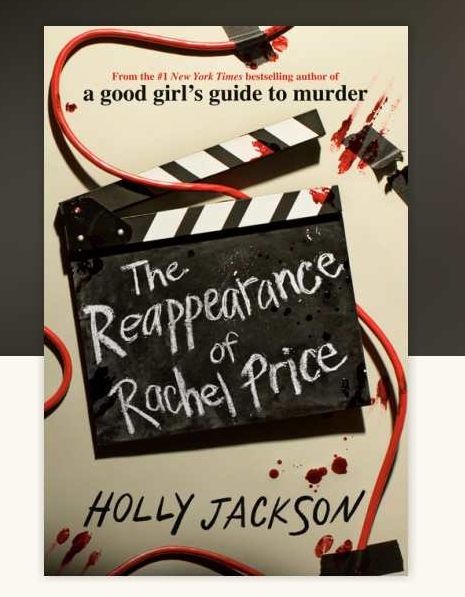

The Reapreance of Rachel Price by Holly Jackson
Published: 2024
Genre: Young Adult,Mystery,Thriller
Rating: 3/5
Summary
In this book, our main character in this book is Bel Price. Her mom went missing when she was younger. While her family is filming a documentary on her disappearance. Rachel comes back. IN the end, we find out Bels cousin is actually her sister(*gasp*). We also find out Pat (Bels' grandfather) and her dad had kidnapped Bel's mom. In the end, Bel's dad and Uncle end up getting pushed off a cliff and die(Shocking, I know).
Now for the fun part!!
- If this book were a book, it would be the memory thief.
- The food would be popcorn
- While reading this book, I was confused, Happy, and bored
Quote time!!!
-
"Sometimes, even after something terrible, good things can happen to good people"
- "The woman stared back at her, like she knew something too. She was Rachel Price. Reappeared."